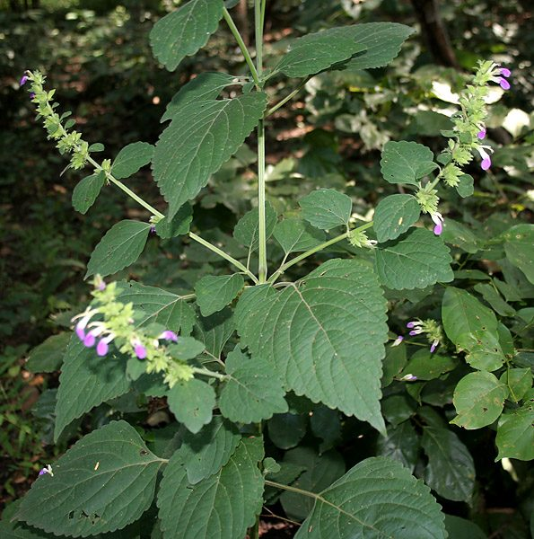

इंडियन कैटमिंटIndian Catmint
Anisomeles indica · Lamiaceae · FLR-0383

- Scientific name वैज्ञानिक नाम
- Anisomeles indica (L.) Kuntze
- Family कुल
- Lamiaceae
- Hindi हिंदी
- इंडियन कैटमिंट
- Local names स्थानीय नाम
- indian catmint
- Status here यहाँ की स्थिति
- native
- Movement आवागमन
- Resident, here all year
- Known from कहाँ दर्ज
- Others have published records from the wider Awadh–Purvanchal plain, none yet from Basti–Ayodhya अवध–पूर्वांचल से दूसरों के प्रकाशित अभिलेख, बस्ती–अयोध्या से अभी नहीं
- IUCN IUCN
- not evaluated
- Review समीक्षा
- not yet reviewed
When to look कब देखें
Expected mainly in August, September, October, November, December, January. मुख्यतः अगस्त, सितंबर, अक्टूबर, नवंबर, दिसंबर, जनवरी में अपेक्षित।
Uses and possibilities उपयोग और संभावनाएँ
“Traditional medicine” means a documented traditional use, not a claim that it works. Nothing on this page is medical advice.
Drawn from the documented uses in the profile below, where each is labelled traditional, current or a research lead. All uses →
Tell it apart from इनसे अलग पहचानें
इंडियन कैटमिंट / Indian Catmint
Anisomeles indica (L.) Kuntze — Lamiaceae
इंडियन कैटमिंट — अवध के गांवों की सीमाओं, बंजर भूमि, परती खेतों और सड़कों के किनारों पर उगने वाला एक सुगंधित जंगली पौधा है जिसके तने चार कोनों वाले और रोमदार होते हैं। इसके पत्ते छूने पर कपूर या पुदीने जैसी गंध देते हैं और पत्तियों के कक्ष से गुलाबी-बैंगनी रंग के दो होंठों वाले छोटे फूलों के छल्ले निकलते हैं। यह पौधा मधुमक्खियों और तितलियों को भरपूर मकरंद देता है और पारंपरिक घरेलू नुस्खों में बुखार व सूजन के लिए उपयोग में लाया जाता रहा है।
Quick Identification त्वरित पहचान
| Feature | Description |
|---|---|
| Habit | Erect, aromatic, coarsely pubescent annual or perennial suffrutescent herb |
| Stems | Stiff, quadrangular, grooved along the faces, densely covered with soft white hairs |
| Leaves | Opposite, ovate to oblong-ovate, serrate to crenate, strongly aromatic when crushed |
| Inflorescence | Dense, many-flowered axillary verticillasters forming elongate interrupted terminal spikes |
| Corollas | Bilabiate, pink to purple-violet; upper lip erect and hooded, lower lip three-lobed |
| Fruit | Four dry nutlets, small, smooth, polished black or dark brown enclosed in persistent calyx |
Erect aromatic herb with sharply quadrangular hairy stems, coarsely toothed opposite leaves that smell pungent when crushed, and dense whorls of purple two-lipped flowers. In rural eastern Uttar Pradesh it forms conspicuous colonies on dry bunds and waste areas after the rains.
हिंदी: चौकोर रोमदार तना, रगड़ने पर पुदीने जैसी खुशबू देने वाले दांतेदार पत्ते और गुलाबी-बैंगनी दो-होंठ वाले फूलों के छल्ले इसकी मुख्य पहचान हैं।
Morphology आकारिकी
Erect suffrutescent herb growing up to one to two meters tall, branching freely from the lower nodes. Stems are distinctly four-angled, grooved along each side, and clothed with dense, spreading or reflexed soft white hairs mixed with minute glandular hairs.
Leaves are opposite, decussate, ovate to oblong-ovate, with a rounded, subcordate, or abruptly cuneate base, and an acute or short-acuminate apex. Leaf margins are coarsely and irregularly crenate-serrate. The upper surface is green and pubescent, while the lower surface is paler with prominent reticulate venation and dense velvet-like hairs. Petioles are slender, densely hairy, and measure several centimeters in length.
Flowers are arranged in dense, many-flowered axillary false whorls (verticillasters) that become distant along the upper stem, forming interrupted terminal spikes. Bracts are linear and hairy. The calyx is tubular-campanulate, five-ribbed, densely hairy and glandular, terminating in five lanceolate-acuminate teeth of roughly equal length. The corolla is tubular, bilabiate, pale purple, violet, or pinkish; the upper lip is erect, entire, and slightly concave; the lower lip is much larger, three-lobed, with a deeply notched spreading median lobe. Stamens are four, didynamous, and project slightly from under the upper lip. The ovary is deeply four-lobed, producing four small, smooth, subglobose, shiny dark brown or black nutlets.
| Measurement | Dimension / Count | Qualitative Context |
|---|---|---|
| Plant height | Measurement not available in consulted open sources. | Tall erect branching herb or subshrub |
| Leaf blade size | Measurement not available in consulted open sources. | Ovate, coarsely serrate, velvety below |
| Inflorescence length | Measurement not available in consulted open sources. | Dense axillary whorls in terminal spike |
| Corolla length | Measurement not available in consulted open sources. | Two-lipped, violet-pink, longer than calyx |
| Nutlet diameter | Measurement not available in consulted open sources. | Small, smooth, subglobose, polished black |
हिंदी: इसका तना चार कोनों वाला और रोयेंदार होता है। पत्तियां चौड़ी, दांतेदार और दोनों तरफ से रोयेंदार होती हैं। फूल डंडी के ऊपरी भाग पर चक्रों में लगते हैं जिनका रंग बैंगनी-गुलाबी होता है।
Behaviour & Ecology व्यवहार एवं पारिस्थितिकी
Anisomeles indica is a hardy, light-demanding pioneer weed adapted to disturbed open habitats across warm temperate and tropical Asia. In the Gangetic alluvium, it colonizes roadsides, uncultivated sandy terraces, old brickwork, village rubbish heaps, and field margins.
The plant contains aromatic essential oils, including monoterpenes and sesquiterpenes, which give it a sharp, camphoraceous scent and deter grazing by cattle and goats. This chemical protection allows it to thrive along heavily grazed pasture boundaries and village commons where more palatable forage is eliminated. It exhibits strong drought resilience once established, persisting on dry ditch banks into the early winter months.
हिंदी: यह पौधा धूप वाली सूखी जमीन और बंजर जगहों पर खूब पनपता है। इसकी तेज महक के कारण गाय-भैंस और बकरियां इसे नहीं खातीं, जिससे यह चरागाहों के किनारों पर सुरक्षित बना रहता है।
Life Cycle / Phenology जीवन चक्र एवं ऋतुचर्या
Seeds germinate rapidly on damp soil following the arrival of the southwest monsoon rains in June or July. Seedlings grow vigorously through the rainy season, establishing substantial root systems and quadrangular aerial shoots.
Flowering commences in August and peaks from September to November. Flowers open in acropetal succession within each whorl, remaining attractive to insect pollinators for several days. After cross-pollination, the corollas wither and drop, while the accrescent calyx persists and hardens around the developing nutlets. Fruiting takes place from October to December. As winter progresses and soils dry out, the aerial stems senesce, shedding nutlets that are dispersed by rainwash and wind into nearby ditches.
हिंदी: बरसात शुरू होते ही इसके बीज उगते हैं। अगस्त से नवंबर तक इसमें लगातार फूल खिलते हैं और जाड़ों की शुरुआत में फलियां पककर बीज बिखेर देती हैं।
Associated Species / Interactions संबद्ध प्रजातियाँ एवं पारिस्थितिक संबंध
The two-lipped violet blossoms of Indian Catmint are heavily visited by hymenopteran pollinators, including solitary bees, honey bees, and leafcutter bees that seek both nectar and pollen. Various diurnal butterflies and day-flying moths also visit the verticillasters.
The foliage provides foraging substrate for predatory bugs and mantids seeking small floral visitors. In agricultural ecotones, the dense aromatic growth provides hunting habitat for predatory bugs, spiders, and praying mantises.
हिंदी: इसके फूलों पर शहद की मक्खियां, भौंरे और तितलियां मकरंद पीने आते हैं। इसकी सुगंधित झाड़ियों में कीटभक्षी मकड़ियां और शिकारी कीड़े शरण लेते हैं।
Pests and Diseases कीट एवं व्याधियाँ
Because of its high concentration of secondary terpenes, Indian Catmint suffers relatively little damage from generalist insect herbivores. Occasional infestations of aphids and whiteflies occur on young apical flushes during humid spells in late monsoon.
Foliar spots caused by fungal pathogens such as Cercospora may appear on older lower leaves late in the season, causing premature yellowing and leaf fall before the fruits fully ripen.
हिंदी: पत्तियों में कड़वे और तेज खुशबूदार तेल होने के कारण आम कीड़े इसे नुकसान नहीं पहुंचाते। कभी-कभी बहुत नमी वाले मौसम में पत्तियों पर फफूंद के धब्बे पड़ जाते हैं।
Agricultural / Human Relevance कृषि एवं मानवीय उपयोगिता
In traditional rural Awadh and broader Indian ethnomedicine, Anisomeles indica (frequently called Gopala, Kudra, or Kalabhangra) has a long history of folk use. Decoctions of the leaves and flowering tops are employed in traditional household preparations to relieve intermittent fevers, coughs, colds, and abdominal discomfort.
The crushed fresh leaves are applied externally as a poultice to soothe inflammatory swellings, bites, and superficial skin ailments. In agriculture, it acts as a reservoir for beneficial pollinating bees and beneficial predatory insects, although it is also treated as a ruderal weed when it invades pulse fields and fallow orchard floors.
हिंदी: लोक चिकित्सा में इसकी पत्तियों का काढ़ा बुखार और खांसी में दिया जाता था। ताजी पत्तियों को पीसकर सूजन और घाव पर लेप करने की पुरानी परंपरा है।
Expected Locally स्थानीय रूप से अपेक्षित
Not a field record. Written from published accounts for eastern Uttar Pradesh. No confirmed local sighting yet — if you have seen it, that is what the atlas needs.
अभी तक स्थानीय पुष्टि नहीं। यह विवरण प्रकाशित स्रोतों से है, किसी अवलोकन से नहीं।
Occurs throughout the rural landscape of eastern Uttar Pradesh along ditch banks, roadside embankments, dry pasture verges, and village outskirts. Observers in Basti and Ayodhya should search sunny, uncultivated ground from September to November for erect, square-stemmed herbs with fragrant leaves and spicate whorls of purple flowers.
GBIF holds published records from the wider Awadh–Purvanchal plain, none yet from Basti–Ayodhya.
A first local record for the atlas would be a clear photograph showing diagnostic features, accompanied by date, time, and precise location coordinates sent through the project's About page.
हिंदी: बस्ती और अयोध्या में परती खेतों की मेड़ों और सड़कों के किनारे जाड़ों से ठीक पहले इसके चौकोर तने और बैंगनी फूल देखे जा सकते हैं।
Distribution वितरण
Native across tropical and subtropical Asia, ranging from India, Sri Lanka, and Nepal eastward through Myanmar, southern China, Indochina, and Malesia.
Within India, it is distributed widely across peninsular India, the western coast, the Himalayan foothills, the central provinces, and the Indo-Gangetic plain. In Uttar Pradesh, it is widespread across the upper and lower plains as a common post-monsoon ruderal weed.
हिंदी: यह पौधा भारत, श्रीलंका, नेपाल और दक्षिण-पूर्व एशिया में व्यापक रूप से पाया जाता है। उत्तर प्रदेश के मैदानों में यह बहुत आम है।
Research Questions शोध प्रश्न
- Which native solitary bee species serve as the most effective pollinators of Anisomeles indica along agricultural borders in eastern Uttar Pradesh?
- What is the composition and seasonal variation of volatile essential oils in populations growing on alluvial soil versus alkaline soils?
- How effectively does the essential oil of Indian Catmint repel stored-grain pests when used in traditional village grain bins?
- क्या गोपाला के फूलों का रस स्थानीय मधुमक्खियों के शहद उत्पादन और छत्तों के पोषण में महत्वपूर्ण भूमिका निभाता है?
- क्या चरागाहों में इस पौधे का फैलाव मवेशियों द्वारा अन्य घासों के अत्यधिक चराए जाने का जैविक संकेत है?
हिंदी: क्या गोपाला का फैलाव चरागाहों के अधिक चरने का संकेत है और इसके तेल से अनाज के कीड़ों को कैसे रोका जा सकता है, यह शोध का विषय है।
Similar Species मिलती-जुलती प्रजातियाँ
| Species | How to tell apart | हिंदी | |
|---|---|---|---|
| Vilayati Tulsi \ | Hyptis suaveolens | Strong aromatic bush; flowers blue; calyx strongly ribbed with five subulate aristate teeth | विलायती तुलसी के फूल नीले होते हैं, पत्तियां तेज गंध वाली और बाह्यदल कांटेदार होते हैं |
| Gumma \ | Leucas aspera | Erect herb; pure white two-lipped flowers in dense globular axillary verticillasters | गुम्मा पर गोल छल्लों में शुद्ध सफेद दो-होंठ वाले फूल खिलते हैं और पत्तियां संकरी होती हैं |
| Anisomeles malabarica (Malabar Catmint) | Densely woolly or tomentose; leaves thicker, oblong-lanceolate with woolly undersurface | अधिक रोयेंदार, पत्तियां लंबी और नीचे से सफेद ऊन जैसी |
Field rule: Look for the stiffly erect, square stem covered in white hairs, coarsely serrate leaves that smell of camphor, and dense verticillasters of two-lipped violet flowers.
हिंदी: चौकोर रोयेंदार तने, पुदीने जैसी गंध और बैंगनी दो-होंठ वाले फूलों के चक्रों से इसे आसानी से पहचाना जा सकता है।
Taxonomy & Classification वर्गिकी एवं वर्गीकरण
Original description. Carl Linnaeus described this species under the name Nepeta indica in Species Plantarum, vol. 2, p. 571 (1753). In 1891, the German botanist Carl Ernst Otto Kuntze transferred it to the genus Anisomeles as Anisomeles indica (L.) Kuntze in Revisio Generum Plantarum, vol. 2, p. 512.
Subspecies. No distinct subspecies are currently recognized in northern India. Historical floras frequently treated this taxon under the synonym Anisomeles ovata R.Br. as documented by Hooker in the Flora of British India (1885) and Duthie in Flora of the Upper Gangetic Plain (1911).
Family and order placement. Placed in the mint family Lamiaceae, order Lamiales. Within the family, it belongs to the subfamily Lamioideae and tribe Stachydeae.
IUCN status rationale. Not Evaluated (NE) globally on the IUCN Red List. It is extremely abundant, wide-ranging, and tolerant of extensive habitat modification across Asia.
हिंदी: 1753 में लिनिअस ने इसका मूल नाम नेपेटा इंडिका रखा था, जिसे 1891 में कुंट्ज़े ने एनिसोमीलेस इंडिका में बदला। पुरानी किताबों में इसे एनिसोमीलेस ओवाटा भी कहा गया है।
Photo Gallery छायाचित्र दीर्घा
No photos yet — this profile is written from published accounts. A voucher-grade photo from eastern Uttar Pradesh will illustrate this species in the atlas.
References संदर्भ
- Original description: Linnaeus, C. (1753). Species Plantarum. Vol. 2. Laurentii Salvii, Holmiae, p. 571.
- Hooker, J. D. (1885). The Flora of British India. Vol. 4. L. Reeve & Co., London, p. 672. (as Anisomeles ovata).
- Duthie, J. F. (1911). Flora of the Upper Gangetic Plain, and of the Adjacent Siwalik and Sub-Himalayan Tracts. Vol. 2. Superintendent of Government Printing, Calcutta, p. 245. (as Anisomeles ovata).
- Kuntze, O. (1891). Revisio Generum Plantarum. Vol. 2. Arthur Felix, Leipzig, p. 512.
- GBIF Occurrence Data — Anisomeles indica, India (2025).
Source file: species/flora/weeds/indian_catmint.md